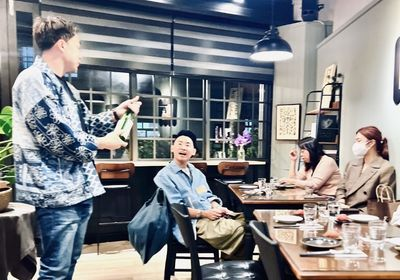
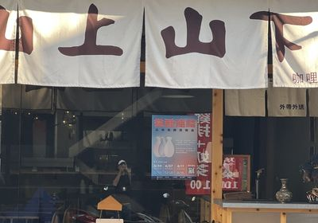
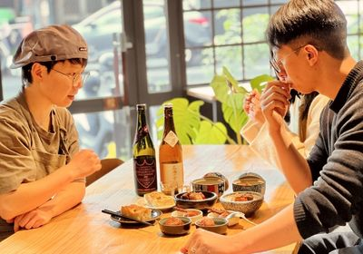
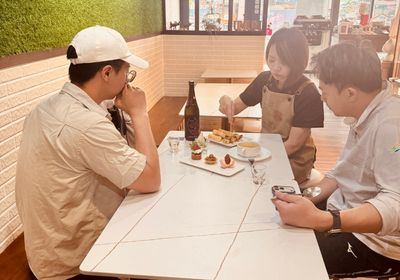
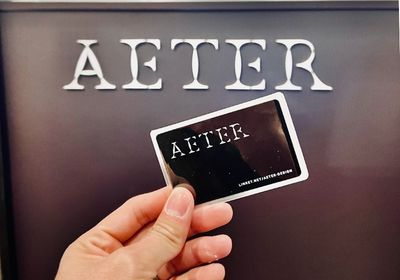

我是林志昇 Tony，一個在埔里工作的獨立設計師，LINKet 創辦人。
10 年設計資歷，跨足品牌識別、空間展示、3D 視覺與印刷。2024 年主動選擇離開職場——嘗試了直銷、身心靈、餐飲顧問……繞了一圈，才發現設計一直在那裡等我。
把解決問題的設計方法論，應用在規劃自己的人生上。讓迷惘有了行動的框架。
"傳統產業不缺技術，缺的是被世界看見的語言。"





這個問題沒有標準答案。但你現在的第一個念頭，值得你認真對待。
不是給了答案，而是改變了我提問的方式。
做起來不覺得累、甚至越做越有能量。不是「應該喜歡」，是真的停不下來。
不需要費力解釋、不需要特別努力就能做得好。這是你的天然優勢。
有人願意為它付錢、或它能真實解決某個人的問題。這讓你的熱情能持續下去。
這條路不是一次找到的。是在創業的過程中，不斷問問題、不斷校正，慢慢靠近那個交集的。
你現在走的每一步，都是素材。不管是迷惘、嘗試、還是繞路，都算數。